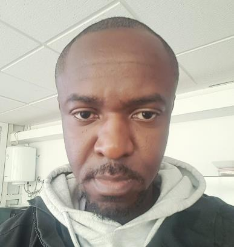

Scénarios d’attaque en environnement d’entraînement
Reconnaissance, énumération, exploitation et élévation de privilèges sur des machines de lab (TryHackMe, Hack The Box, VulnHub).
Eddis-Véroux Kimpouny. Je me forme et je m’exerce en Red Team, Blue Team et administration systèmes pour comprendre une infrastructure autant par l’attaque que par la défense.
Professionnel IT spécialisé en réseaux, systèmes et cybersécurité, avec une double formation en développement Full Stack et en systèmes, réseaux et cybersécurité. Compétences en architecture réseau, administration Linux/Windows, Active Directory, sécurité réseau, IDS/IPS, SIEM/SOC, DevSecOps et CI/CD. Profil polyvalent couvrant l’infrastructure, la sécurité, la supervision, l’automatisation et le développement logiciel. Licence obtenue en 2025/2026 et poursuite en Master Systèmes, Réseaux & Cybersécurité en 2026/2027.
Toujours apprendre. Toujours expérimenter. Toujours chercher à comprendre. La cybersécurité n’est pas seulement une compétence technique pour moi, c’est un état d’esprit, une passsion fondée sur la curiosité, l’analyse et l’amélioration continue.

Solutions30, Casablanca, Maroc
Privat Bank, Orel, Russie
Reconnaissance, énumération, exploitation et élévation de privilèges sur des machines de lab (TryHackMe, Hack The Box, VulnHub).
Manipulation de Windows et d’Active Directory, avec des méthodologies d’audit de domaines.
Mise en place et configuration de labs, analyse de logs, surveillance de sécurité et investigation.
Diagnostic et analyse réseau avec Wireshark et tcpdump, notamment à partir de captures PCAP.
Conception d’un environnement de laboratoire orienté supervision, détection et réponse aux incidents.
Casablanca, Maroc
École Supérieure OSBT, Casablanca, Maroc
Université d’État d’Orel, Orel, Russie
Un projet, une question ou une opportunité dans les réseaux, les systèmes, la cybersécurité ou en rétro-ingénierie ? Écrivez-moi.